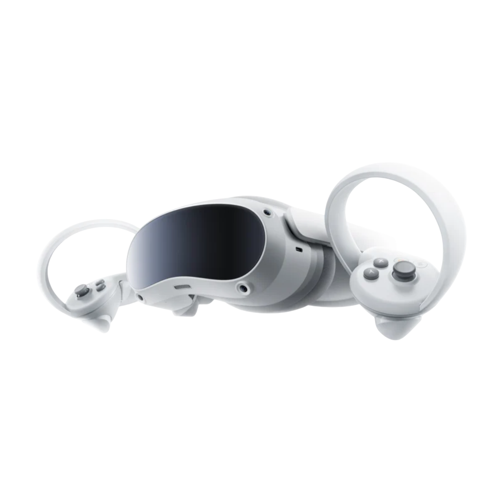
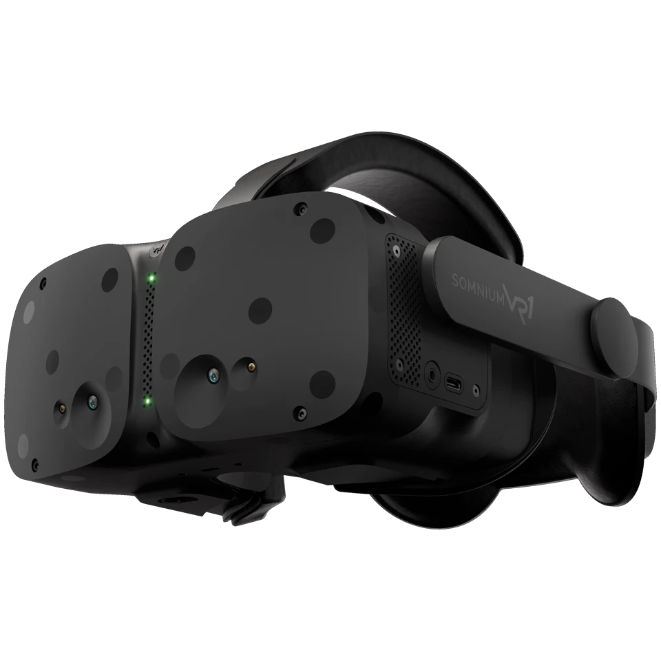

Visori VR
Standalone
Funziona senza PC: il visore ha già integrati tutti i componenti necessari come il processore, memoria e schermo. È portatile e facile da usare, ma ha grafica e potenza limitate.

Meta Quest 3 - Visore tutto-in-uno con grafica migliorata e passthrough a colori.

Pico VR 4 - Alternativa stand-alone con ottimo rapporto qualità/prezzo e hand-tracking.
PCVR
Necessita un PC: offre grafica superiore, giochi più dettagliati e complessi, ma presenta meno portabilità e una configurazione più tecnica.

Valve Index - Visore di fascia alta con controller avanzati per un tracciamento delle mani preciso.

Somnium VR - Visore modulare ad alta risoluzione e aggiornamento con supporto open-source.